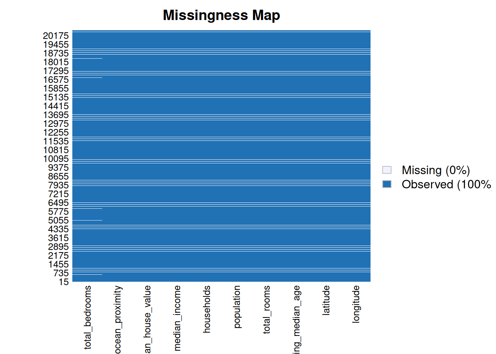
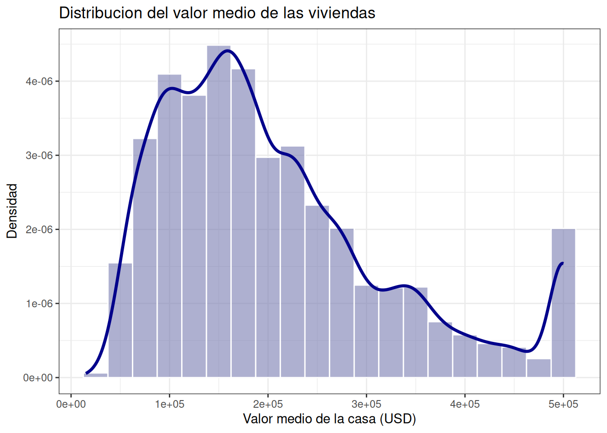
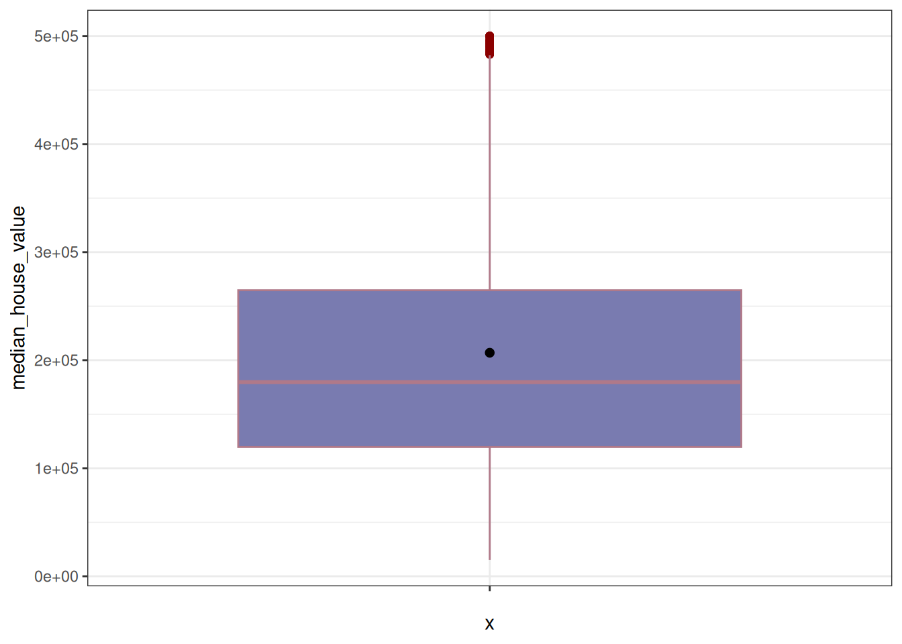
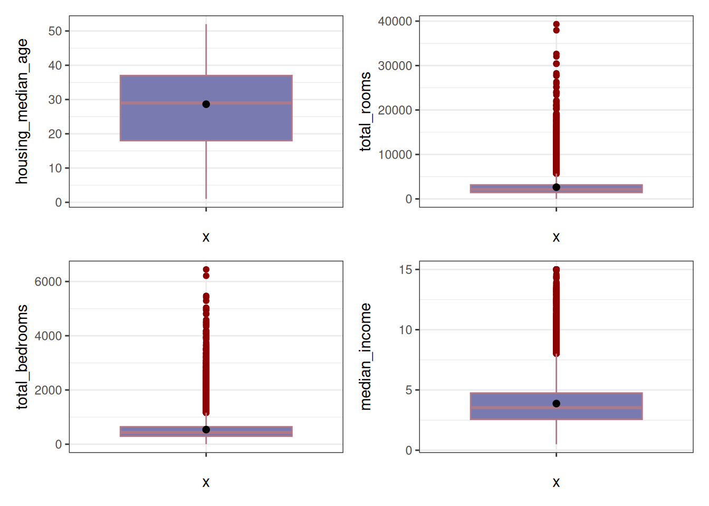
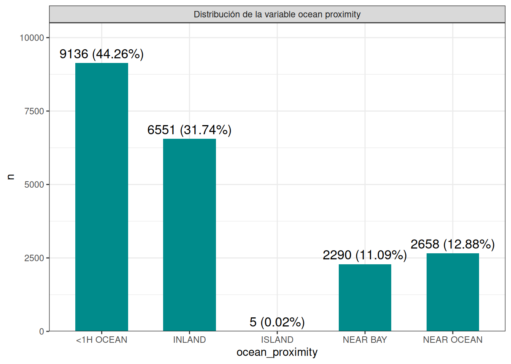
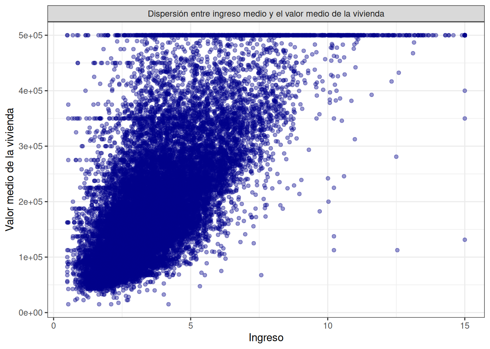
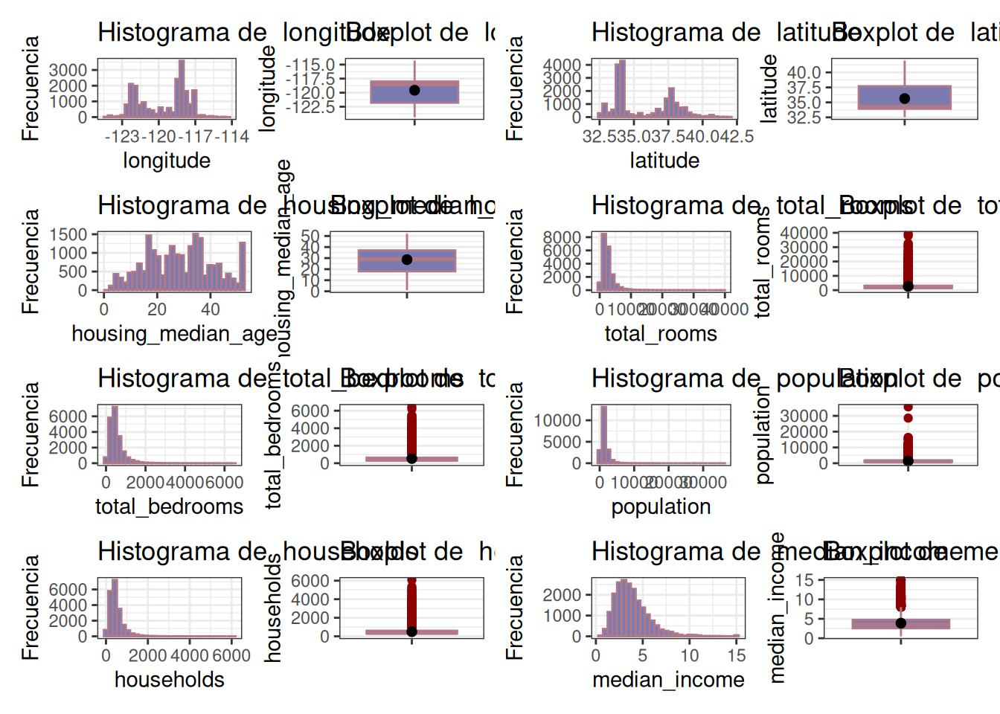

Chapter 2 EDA
Carguemos las librerias
library(tidyverse)
library(Amelia)
library(dplyr)
library(moments)
library(ggplot2)
library(patchwork)
library(GGally)Conjunto de datos
data <- read.csv("/cloud/project/Metodos_estadisticos/Data/housing.csv")
data_cae <- read.csv("/cloud/project/Metodos_estadisticos/Data/cognitive_ability_ai_exposure.csv")
data_ocp <- read.csv("/cloud/project/Metodos_estadisticos/Data/occupation_cognitive_profile.csv")Muestrame las 5 primeras filas
## longitude latitude housing_median_age total_rooms total_bedrooms population
## 1 -122.23 37.88 41 880 129 322
## 2 -122.22 37.86 21 7099 1106 2401
## 3 -122.24 37.85 52 1467 190 496
## 4 -122.25 37.85 52 1274 235 558
## 5 -122.25 37.85 52 1627 280 565
## households median_income median_house_value ocean_proximity
## 1 126 8.3252 452600 NEAR BAY
## 2 1138 8.3014 358500 NEAR BAY
## 3 177 7.2574 352100 NEAR BAY
## 4 219 5.6431 341300 NEAR BAY
## 5 259 3.8462 342200 NEAR BAYLa estructura de los datos
## 'data.frame': 20640 obs. of 10 variables:
## $ longitude : num -122 -122 -122 -122 -122 ...
## $ latitude : num 37.9 37.9 37.9 37.9 37.9 ...
## $ housing_median_age: num 41 21 52 52 52 52 52 52 42 52 ...
## $ total_rooms : num 880 7099 1467 1274 1627 ...
## $ total_bedrooms : num 129 1106 190 235 280 ...
## $ population : num 322 2401 496 558 565 ...
## $ households : num 126 1138 177 219 259 ...
## $ median_income : num 8.33 8.3 7.26 5.64 3.85 ...
## $ median_house_value: num 452600 358500 352100 341300 342200 ...
## $ ocean_proximity : chr "NEAR BAY" "NEAR BAY" "NEAR BAY" "NEAR BAY" ...Veamos si hay datos faltantes
## NA_longitude NA_latitude NA_housing_median_age NA_total_rooms
## 1 0 0 0 0
## NA_total_bedrooms NA_population NA_households NA_median_income
## 1 207 0 0 0
## NA_median_house_value NA_ocean_proximity
## 1 0 0## NA_cognitive_ability NA_cognitive_family NA_ai_exposure_score
## 1 0 0 0## NA_soc_code NA_occupation_title NA_Oral.Comprehension
## 1 0 0 0
## NA_Written.Comprehension NA_Oral.Expression NA_Written.Expression
## 1 0 0 0
## NA_Fluency.of.Ideas NA_Originality NA_Problem.Sensitivity
## 1 0 0 0
## NA_Deductive.Reasoning NA_Inductive.Reasoning NA_Information.Ordering
## 1 0 0 0
## NA_Category.Flexibility NA_Mathematical.Reasoning NA_Number.Facility
## 1 0 0 0
## NA_Memorization NA_Speed.of.Closure NA_Flexibility.of.Closure
## 1 0 0 0
## NA_Perceptual.Speed NA_Spatial.Orientation NA_Visualization
## 1 0 0 0
## NA_Selective.Attention NA_Time.Sharing
## 1 0 0Otra forma de detectar valores faltantes

Ahora hagamos la imputacion de datos faltantes
Verificar si tiene datos faltantes nuevamente
## NA_longitude NA_latitude NA_housing_median_age NA_total_rooms
## 1 0 0 0 0
## NA_total_bedrooms NA_population NA_households NA_median_income
## 1 0 0 0 0
## NA_median_house_value NA_ocean_proximity
## 1 0 0Vamos a convertir la variable ‘ocean_proximity’ en un factor
2.1 Análisis exploratorio de ‘median_house_value’ (Target)
Realicemos el resumen estadístico de la variable
df %>% summarise(n = length(median_house_value),
media = mean(median_house_value),
sd = sd(median_house_value),
mediana = median(median_house_value),
RIC = IQR(median_house_value),
Q1 = quantile(median_house_value, 0.25),
Q3 = quantile(median_house_value, 0.75),
minimo = min(median_house_value),
maximo = max(median_house_value),
curtosis = kurtosis(median_house_value),
Coef_asim = skewness(median_house_value))## n media sd mediana RIC Q1 Q3 minimo maximo curtosis
## 1 20640 206855.8 115395.6 179700 145125 119600 264725 14999 500001 3.3275
## Coef_asim
## 1 0.9776922Se registraron un total de 20.640 casas. En promedio las casas cuestan aproximadamente $206.855 (con una desviación estándar de $115.395). Por otro lado, el 50% de las casas cuestan a lo sumo $180.000, mientras que, en caso de estar buscando casas más baratas, el 25% de las casas tienen un valor de $120.000 o menos (teniendo la más barata un costo de $14999). Asimismo, en caso de buscar una vivienda mejor valuada, el 75% de las casas cuestan por mucho $264.725 y el resto cuestan más que ese valor (siendo la más cara una con un valor de $500.001). Si visualizamos los datos también podemos observar que su forma es platicúrtica, es decir, se evidencia una forma de mesa. Además, por una asimetría o sesgo a la derecha se observa que existen valores de casas excesivamente altos con respecto a la mayoría.
Veamos un histograma
df %>%
ggplot(aes(x = median_house_value))+
geom_histogram(aes(y = after_stat(density)),
binwidth = 25000,
fill = "#797bb0",
color = "white",
alpha = 0.6)+
geom_density(color = "darkblue", linewidth = 1.2)+
labs(title = 'Distribucion del valor medio de las viviendas',
x = 'Valor medio de la casa (USD)',
y = 'Densidad')+
theme_bw()
Asimismo, se evidencia la existencia de un sesgo hacia la derecha al considerar que la acumulación de los costos de las casas se encuentran hacia la izquierda, no obstante, algunas casas de gran valor desplazan la media a la derecha.
df %>%
ggplot(aes(x = "", y = median_house_value))+
geom_boxplot(fill = "#797bb0", color = "#b07989",
outlier.color = "darkred")+
stat_summary(fun = mean, geom = 'point', shape = 20, size = 3, color = 'black')+
theme_bw()
2.2 Análisis de las variables independientes (características)
df %>%
select(where(is.numeric), -median_house_value) %>%
pivot_longer(
cols = everything(),
names_to = 'variable',
values_to = 'valor'
) %>%
group_by(variable) %>%
summarise(n = length(valor),
media = mean(valor),
sd = sd(valor),
mediana = median(valor),
RIC = IQR(valor),
Q1 = quantile(valor, 0.25),
Q3 = quantile(valor, 0.75),
minimo = min(valor),
maximo = max(valor),
curtosis = kurtosis(valor),
Coef_asim = skewness(valor))## # A tibble: 8 × 12
## variable n media sd mediana RIC Q1 Q3 minimo maximo
## <chr> <int> <dbl> <dbl> <dbl> <dbl> <dbl> <dbl> <dbl> <dbl>
## 1 househol… 20640 500. 3.82e2 409 3.25e2 280 605 1 6082
## 2 housing_… 20640 28.6 1.26e1 29 1.9 e1 18 37 1 52
## 3 latitude 20640 35.6 2.14e0 34.3 3.78e0 33.9 37.7 32.5 42.0
## 4 longitude 20640 -120. 2.00e0 -118. 3.79e0 -122. -118. -124. -114.
## 5 median_i… 20640 3.87 1.90e0 3.53 2.18e0 2.56 4.74 0.500 15.0
## 6 populati… 20640 1425. 1.13e3 1166 9.38e2 787 1725 3 35682
## 7 total_be… 20640 538. 4.19e2 438 3.46e2 297 643. 1 6445
## 8 total_ro… 20640 2636. 2.18e3 2127 1.70e3 1448. 3148 2 39320
## # ℹ 2 more variables: curtosis <dbl>, Coef_asim <dbl>Falta interpretación.
df %>%
ggplot(aes(x = "", y = housing_median_age))+
geom_boxplot(fill = "#797bb0", color = "#b07989",
outlier.color = "darkred")+
stat_summary(fun = mean, geom = 'point', shape = 20, size = 3, color = 'black')+
theme_bw() -> p1
df %>%
ggplot(aes(x = "", y = total_rooms))+
geom_boxplot(fill = "#797bb0", color = "#b07989",
outlier.color = "darkred")+
stat_summary(fun = mean, geom = 'point', shape = 20, size = 3, color = 'black')+
theme_bw() -> p2
df %>%
ggplot(aes(x = "", y = total_bedrooms))+
geom_boxplot(fill = "#797bb0", color = "#b07989",
outlier.color = "darkred")+
stat_summary(fun = mean, geom = 'point', shape = 20, size = 3, color = 'black')+
theme_bw() -> p3
df %>%
ggplot(aes(x = "", y = median_income))+
geom_boxplot(fill = "#797bb0", color = "#b07989",
outlier.color = "darkred")+
stat_summary(fun = mean, geom = 'point', shape = 20, size = 3, color = 'black')+
theme_bw() ->p4
p1 + p2 + p3 + p4
Ahora veamos la variable ocean_proximity
df %>%
count(ocean_proximity, name = "n")%>%
mutate(Porcentaje = round(n/sum(n)*100, 2),
Variable = 'ocean_proximity',
Categoria = as.character(ocean_proximity))%>%
select(Variable, Categoria, n, Porcentaje) -> tabla_ocean
tabla_ocean## Variable Categoria n Porcentaje
## 1 ocean_proximity <1H OCEAN 9136 44.26
## 2 ocean_proximity INLAND 6551 31.74
## 3 ocean_proximity ISLAND 5 0.02
## 4 ocean_proximity NEAR BAY 2290 11.09
## 5 ocean_proximity NEAR OCEAN 2658 12.88df %>%
count(ocean_proximity, name = "n")%>%
mutate(Porcentaje = round(n/sum(n)*100, 2),
Etiqueta = paste0(n, " (", Porcentaje, "%)")) -> tabla_ocean_b
tabla_ocean_b %>%
ggplot(aes(x = ocean_proximity, y = n))+
geom_col(fill = "#008B8B", width = 0.6)+
geom_text(aes(label = Etiqueta), vjust = -0.5, size = 4.5)+
facet_wrap(~'Distribución de la variable ocean proximity')+
scale_y_continuous(expand = expansion(mult = c(0, 0.15)))+
theme_bw()
2.3 Análisis exploratorio bivariado
df %>%
ggplot(aes(x = median_income, y = median_house_value))+
geom_point(alpha = 0.4, color = 'darkblue')+
labs(y = 'Valor medio de la vivienda',
x = 'Ingreso')+
theme_bw()+
facet_grid(.~'Dispersión entre ingreso medio y el valor medio de la vivienda')
Ahora comparemos el valor medio de la vivienda según la aproximidad al oceano.
df %>%
group_by(ocean_proximity) %>%
summarise(n = length(median_house_value),
media = mean(median_house_value),
sd = sd(median_house_value),
mediana = median(median_house_value),
RIC = IQR(median_house_value),
Q1 = quantile(median_house_value, 0.25),
Q3 = quantile(median_house_value, 0.75),
minimo = min(median_house_value),
maximo = max(median_house_value),
curtosis = kurtosis(median_house_value),
Coef_asim = skewness(median_house_value))## # A tibble: 5 × 12
## ocean_proximity n media sd mediana RIC Q1 Q3 minimo maximo
## <fct> <int> <dbl> <dbl> <dbl> <dbl> <dbl> <dbl> <dbl> <dbl>
## 1 <1H OCEAN 9136 2.40e5 1.06e5 214850 125000 164100 289100 17500 500001
## 2 INLAND 6551 1.25e5 7.00e4 108500 71450 77500 148950 14999 500001
## 3 ISLAND 5 3.80e5 8.06e4 414700 150000 300000 450000 287500 450000
## 4 NEAR BAY 2290 2.59e5 1.23e5 233800 183200 162500 345700 22500 500001
## 5 NEAR OCEAN 2658 2.49e5 1.22e5 229450 172750 150000 322750 22500 500001
## # ℹ 2 more variables: curtosis <dbl>, Coef_asim <dbl>Falta interpretación
Veamos un gráfico de cajas y bigotes

Se empieza el análisis exploratorio univariado por cada variable independiente numérica
plot_univariado <- function(df, var) {
p_box <- df %>%
ggplot(aes(x = "", y = .data[[var]])) +
geom_boxplot(fill = "#797bb0", color = "#b07989",
outlier.color = "darkred") +
stat_summary(fun = mean, geom = 'point', shape = 20, size = 3, color = 'black') +
labs(title = paste("Boxplot de ", var), x = NULL, y = var) +
theme_bw()
p_hist <- df %>%
ggplot(aes(x = .data[[var]])) +
geom_histogram(fill = "#797bb0", color = "#b07989", bins = 30) +
labs(title = paste("Histograma de ", var), x = var, y = "Frecuencia") +
theme_bw()
p_hist + p_box
}
vars_numericas <- df %>%
select(where(is.numeric), -median_house_value) %>%
names()
plots <- map(vars_numericas, ~ plot_univariado(df, .x))
wrap_plots(plots, ncol = 2)